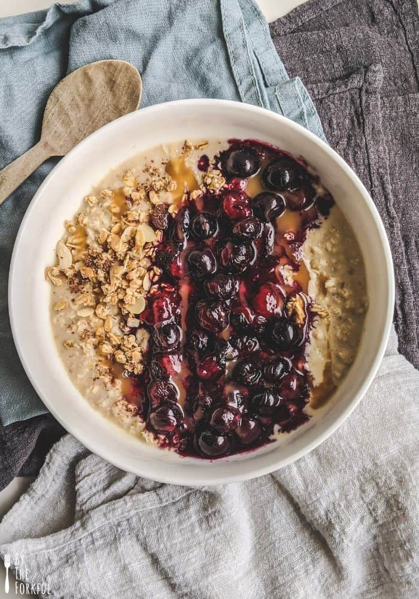

Oatmeal

Vegan Oatmeal
Vegan Protein Oatmeal with berries and peanut butter
Ingredients
- Oats
- Soy Milk
- Plant Protein Powder
- Mixed Frozen Berries
- Creatine
- Peanut Butter
- Cranberry Raisins
Steps
- Add 80g of oats to bowl
- Pour 1 cup of soy milk over oats
- Microwave on high for 3 minutes
- Add frozen berries and mix
-
Add peanut butter, creatine, and cranberry raisins and mix thorougly